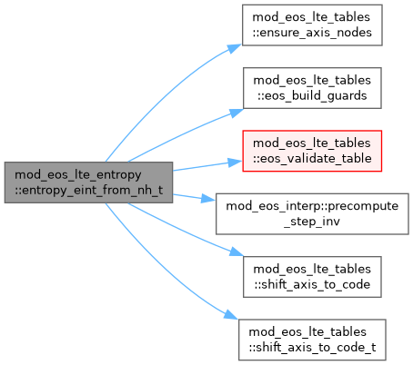
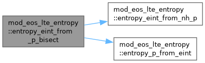
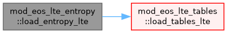

Entropy-method LTE EoS: every query is ONE bicubic Hermite evaluation. More...
Functions/Subroutines | |
| subroutine, public | load_entropy_lte () |
| Forward (log nH, log eint/nH) -> thermodynamic state. | |
| subroutine, public | finalise_entropy_lte () |
| Entropy-method finalise: shift each loaded table's axes from CGS to code units and run the standard prepare. No aux builds – every runtime quantity is a single Hermite lookup. neOnH/Tfwd/pfwd/eintP/g1p are on (log nH, log eint/nH) (axis2_is_T=.false.); eintT is on (log nH, log T) (axis2_is_T=.true.). Each quantity ships value + three derivative tables. | |
| double precision function, public | entropy_t_from_nh_eint (log_nh_code, log_e_nh_code) |
| Public lookups, code units in and out. Forward tables are on (log nH, log eint/nH), eintP and g1p on (log nH, log p/nH), eintT on (log nH, log T). | |
| pure double precision function, public | entropy_p_nh_from_eint (log_nh_code, log_e_nh_code) |
| pure double precision function, public | entropy_p_from_eint (log_nh_code, log_e_nh_code) |
| Pressure in code units from (log nH, log eint/nH); the pfwd table holds p itself. | |
| double precision function, public | entropy_y_from_nh_eint (log_nh_code, log_e_nh_code) |
| subroutine, public | entropy_t_and_y_from_nh_eint (log_nh_code, log_e_nh_code, t_code, y_out) |
| T and ne/nH at one point: Tfwd and neOnH share the forward grid, so the cell location and the basis are computed once. | |
| double precision function, public | entropy_eint_from_nh_p (log_nh_code, log_p_nh_code) |
| eint/p in code units from (log nH, log p/nH). The table holds log10(eint/nH) in CGS | |
| subroutine, public | entropy_eint_from_p_bisect (log_nh_code, log_p_nh_code, log_eint_nh_code) |
| Bisection inverse: log10(eint/nH) [code] such that the forward pressure matches p exactly; the eintP table only supplies the initial guess. | |
| double precision function, public | entropy_gamma1_from_nh_p (log_nh_code, log_p_nh_code) |
| double precision function, public | entropy_eint_from_nh_t (log_nh_code, log_t_code) |
| log10(eint/nH) in code units from (log nH, log T); the table holds it in CGS | |
Detailed Description
Entropy-method LTE EoS: every query is ONE bicubic Hermite evaluation.
Each quantity is stored as four tables – the value plus its three derivatives (d/dx, d/dy, d2/dxdy) at every node – which fully determine the bicubic Hermite polynomial in each cell: exact at nodes, O(h^4) inside, no closure. No Newton, bisection, or iteration on the hot path; the iterative work is done offline against the analytic Saha solver (see entropy128/generate_entropy_tables.py).
Forward tables, axes (log10 nH, log10 eint/nH): Tfwd -> T pfwd -> p neOnH -> ne/nH Inverse tables: eintP (log nH, log p/nH) -> log10(eint/nH) eintT (log nH, log T) -> log10(eint/nH) g1p (log nH, log p/nH) -> Gamma_1
Gamma_1 is tabulated directly (g1p) rather than recovered from second derivatives, so the lookup stays smooth; values are Maxwell-consistent with (p, T) by construction.
Function/Subroutine Documentation
◆ entropy_eint_from_nh_p()
| double precision function, public mod_eos_lte_entropy::entropy_eint_from_nh_p | ( | double precision, intent(in) | log_nh_code, |
| double precision, intent(in) | log_p_nh_code ) |
eint/p in code units from (log nH, log p/nH). The table holds log10(eint/nH) in CGS
Definition at line 370 of file mod_eos_lte_entropy.t.
◆ entropy_eint_from_nh_t()
| double precision function, public mod_eos_lte_entropy::entropy_eint_from_nh_t | ( | double precision, intent(in) | log_nh_code, |
| double precision, intent(in) | log_t_code ) |
log10(eint/nH) in code units from (log nH, log T); the table holds it in CGS
Definition at line 448 of file mod_eos_lte_entropy.t.

◆ entropy_eint_from_p_bisect()
| subroutine, public mod_eos_lte_entropy::entropy_eint_from_p_bisect | ( | double precision, intent(in) | log_nh_code, |
| double precision, intent(in) | log_p_nh_code, | ||
| double precision, intent(out) | log_eint_nh_code ) |
Bisection inverse: log10(eint/nH) [code] such that the forward pressure matches p exactly; the eintP table only supplies the initial guess.
Definition at line 379 of file mod_eos_lte_entropy.t.

◆ entropy_gamma1_from_nh_p()
| double precision function, public mod_eos_lte_entropy::entropy_gamma1_from_nh_p | ( | double precision, intent(in) | log_nh_code, |
| double precision, intent(in) | log_p_nh_code ) |
Definition at line 442 of file mod_eos_lte_entropy.t.
◆ entropy_p_from_eint()
| pure double precision function, public mod_eos_lte_entropy::entropy_p_from_eint | ( | double precision, intent(in) | log_nh_code, |
| double precision, intent(in) | log_e_nh_code ) |
Pressure in code units from (log nH, log eint/nH); the pfwd table holds p itself.
Definition at line 340 of file mod_eos_lte_entropy.t.
◆ entropy_p_nh_from_eint()
| pure double precision function, public mod_eos_lte_entropy::entropy_p_nh_from_eint | ( | double precision, intent(in) | log_nh_code, |
| double precision, intent(in) | log_e_nh_code ) |
Definition at line 333 of file mod_eos_lte_entropy.t.
◆ entropy_t_and_y_from_nh_eint()
| subroutine, public mod_eos_lte_entropy::entropy_t_and_y_from_nh_eint | ( | double precision, intent(in) | log_nh_code, |
| double precision, intent(in) | log_e_nh_code, | ||
| double precision, intent(out) | t_code, | ||
| double precision, intent(out) | y_out ) |
T and ne/nH at one point: Tfwd and neOnH share the forward grid, so the cell location and the basis are computed once.
Definition at line 352 of file mod_eos_lte_entropy.t.
◆ entropy_t_from_nh_eint()
| double precision function, public mod_eos_lte_entropy::entropy_t_from_nh_eint | ( | double precision, intent(in) | log_nh_code, |
| double precision, intent(in) | log_e_nh_code ) |
Public lookups, code units in and out. Forward tables are on (log nH, log eint/nH), eintP and g1p on (log nH, log p/nH), eintT on (log nH, log T).
Definition at line 328 of file mod_eos_lte_entropy.t.
◆ entropy_y_from_nh_eint()
| double precision function, public mod_eos_lte_entropy::entropy_y_from_nh_eint | ( | double precision, intent(in) | log_nh_code, |
| double precision, intent(in) | log_e_nh_code ) |
Definition at line 345 of file mod_eos_lte_entropy.t.
◆ finalise_entropy_lte()
| subroutine, public mod_eos_lte_entropy::finalise_entropy_lte |
Entropy-method finalise: shift each loaded table's axes from CGS to code units and run the standard prepare. No aux builds – every runtime quantity is a single Hermite lookup. neOnH/Tfwd/pfwd/eintP/g1p are on (log nH, log eint/nH) (axis2_is_T=.false.); eintT is on (log nH, log T) (axis2_is_T=.true.). Each quantity ships value + three derivative tables.
The entropy method never loads eosT, but several callers read eosTvar{1,2}_{min,max} (the cold-cell eint floor, FI-fallback checks). Source them from eosTfwd, on the same forward grid.
Definition at line 85 of file mod_eos_lte_entropy.t.
◆ load_entropy_lte()
| subroutine, public mod_eos_lte_entropy::load_entropy_lte |
Forward (log nH, log eint/nH) -> thermodynamic state.
Inverse (log nH, log p/nH) -> eint/p ratio, Gamma_1 Inverse (log nH, log T) -> log10(eint/nH) Entropy-method load: six quantities, each a value table plus its three derivative tables, on the forward (nH, eint/nH), inverse-p (nH, p/nH) and inverse-T (nH, T) grids. Every runtime query is one bicubic-Hermite evaluation (see generate_entropy_tables.py).
Definition at line 64 of file mod_eos_lte_entropy.t.

Generated by